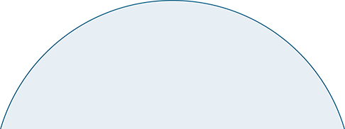

<div class="section">
  <div class="content">

    <div *ngIf="current_ques != undefined">
      <div class="question">
        <app-animatedtext #animatedText textId="ques" [(data)]="this.current_ques.question.content"></app-animatedtext>
      </div>
      <div class="choices">
        <div *ngFor="let ans of this.current_ques.question.choices;let i=index" class="choose" id="choose">
          <div class="rad">
            <p class="correct">
              <label class="container">
                <input type="radio" class="radio" name="{{'choices_'+current_ques_no}}" value="{{ans.content}}"
                  (change)="check(i)" [disabled]="disabled"> <span class="checkmark"></span>
                <div class="choice">{{ans.content}}</div>
              </label>
            </p>
          </div>
        </div>
      </div>
    </div>
    <div class="buttons">
      <div class="submit" (click)="submit()" *ngIf="isnext == false">Submit</div>
      <div class="submit" (click)="next()" *ngIf="ishidden == false">Next</div>
    </div>
    <div class="points">
      
      <!-- <button (click)="current_ques_no = current_ques_no + 1">Score</button> -->
      <div class="score">
        <!-- <div class="one triangle"></div>
        <div class="two triangle"></div>
        <div class="three triangle"></div>
        <div class="four triangle"></div>
        <div class="five triangle"></div>
        <div class="six triangle"></div>
        <div class="halfCircle triangle"></div>
        <div class="needle triangle"></div> -->


        <div class="multi-graph">
          <div class="graph " style="--percentage :100 ; "></div>
          <div class="graph " style="--percentage : 83.32; "></div>
          <div class="graph " style="--percentage : 66.64; "></div>
          <div class="graph " style="--percentage : 49.98; "></div>
          <div class="graph " style="--percentage : 33.32; "></div>
          <div class="graph " style="--percentage :16.66 ; "></div>
          <div class="scoreTxt">
             {{marks}} / 600
          </div>
          <!-- <div class="needle triangle" [style.transform]="'rotate(' + deg[current_ques_no] + 'deg)'" -->
            <div class="needle triangle"  [style.transform]="'rotate(' + (marks / 600) * 186 +'deg)'"></div>
        </div>

      </div>

    </div>
    <div *ngIf="result_page">
<<<<<<< HEAD
      Your Percentage : {{percentage}}%
=======

      Your Percentage : {{percentage | number : '1.1-1'}}%
>>>>>>> bbe44be5e283ab2f68d5d506c56169972b4f5f90

      <div *ngIf="correct">
        <p>
          We’re glad you have spent time learning more about empathy and know the skill is not developed over night.
          Keep working on developing your empathy and don’t hesitate to partner with your manager and coworkers to
          discuss how to handle certain situations.
        </p>
      </div>
      <div *ngIf="wrong">
        <p>
          Great work! You’ve been able to identify most, if not all, responses that are most empathetic. You have a
          high-level
          understanding of empathy. Don’t hesitate to help your coworkers develop their empathy and let them know they
          can
          reach out to you if they need help responding to clients.
        </p>
      </div>
      <div class="replay">
        <!-- <a href="/page5"> Replay</a> -->
        <div class="submit" (click)="replay()">Replay</div>
      </div>
    </div>
  </div>
</div>
